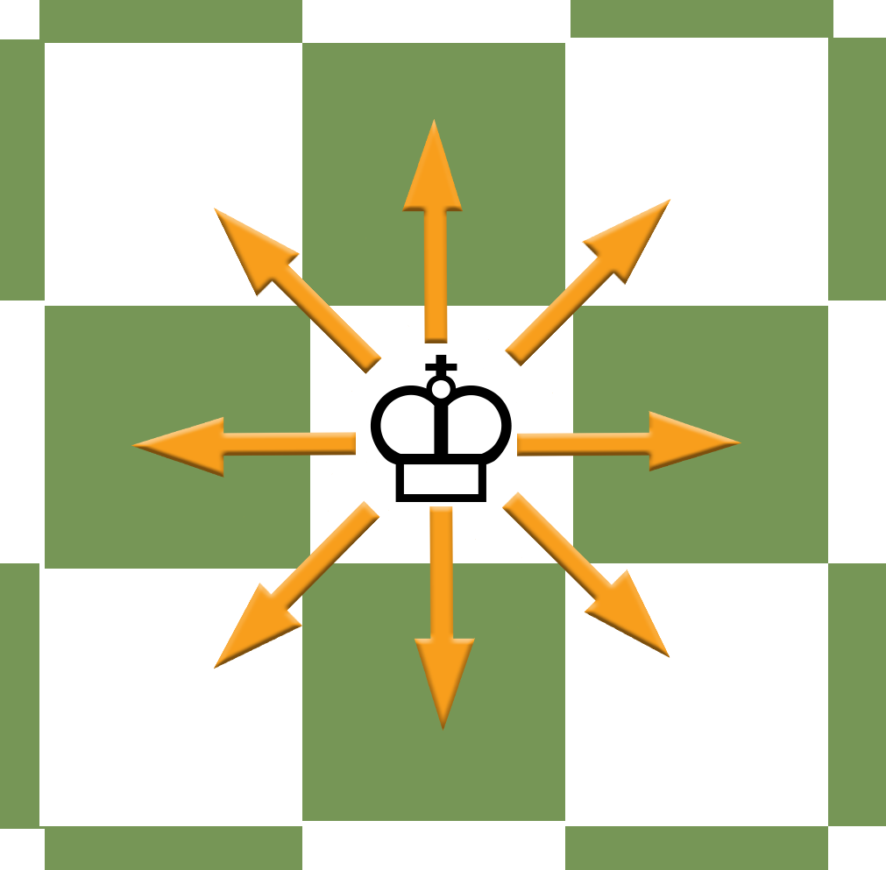
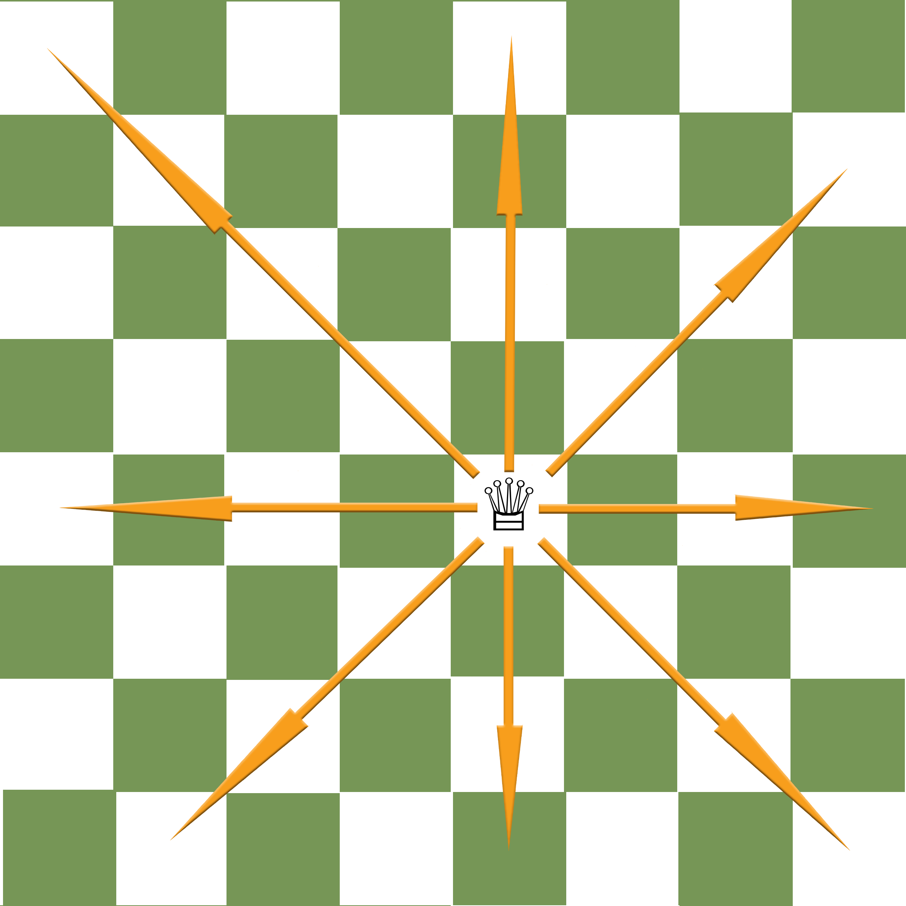
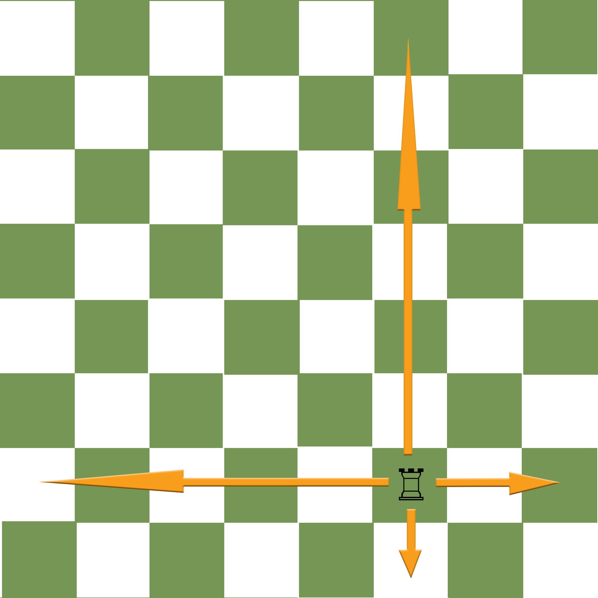
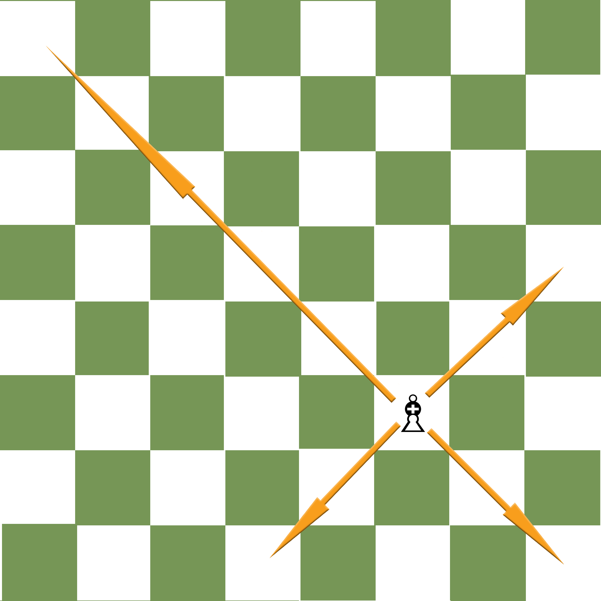
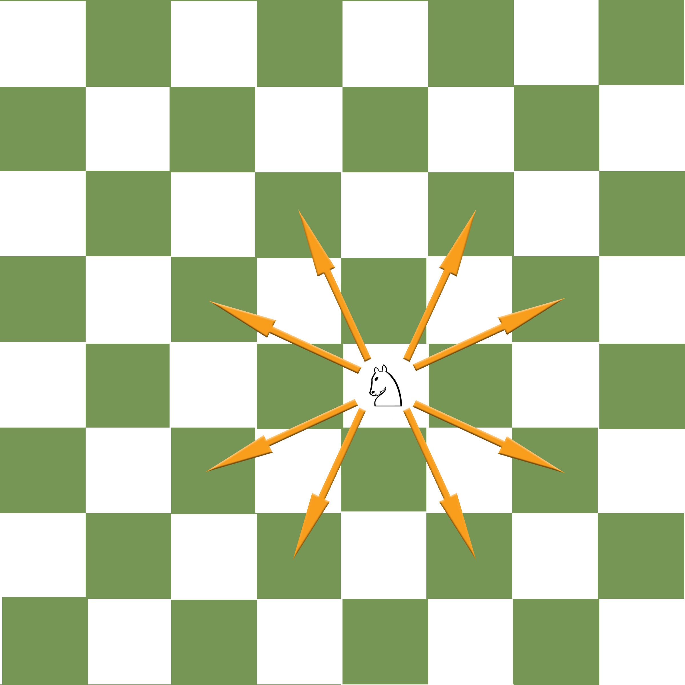
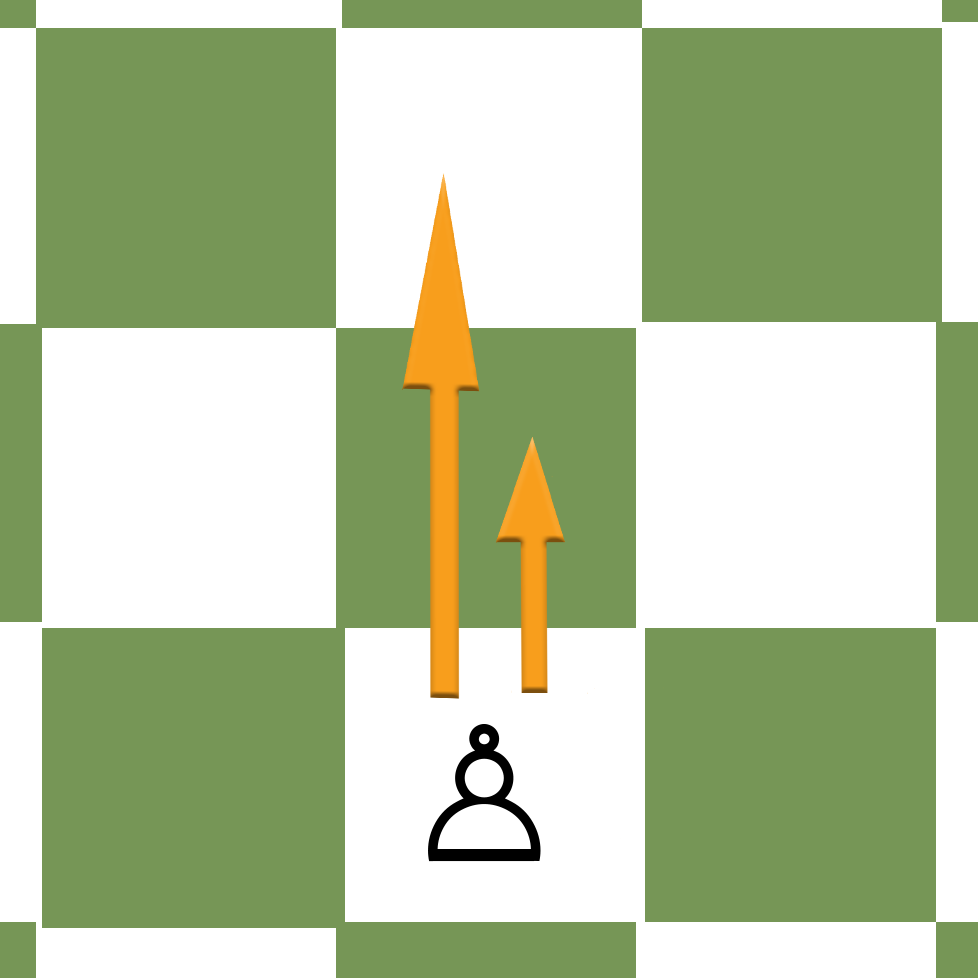
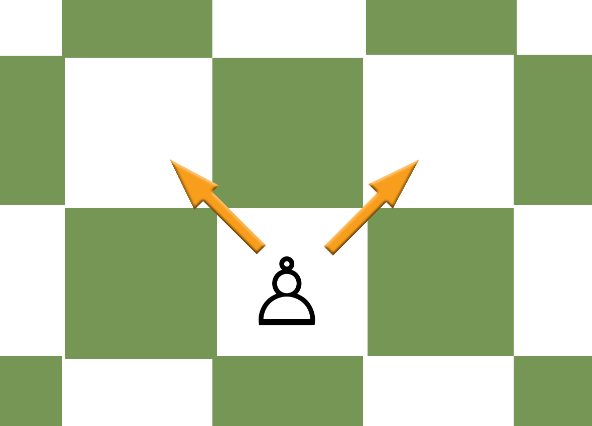

How to Move the Pieces
King
The king can move one square in any direction as long as it is not obstructed by one of it's own pieces. When taking an enemy piece, it replaces the piece on the square the enemy piece occupies. It may not move into onto a square under attack by another piece. If the square the king sits on is under attack, it must: move, take the enemy piece, another friendly piece must take the enemy piece or, if possible, a friendly piece may block the attack of the enemy piece by standing in it's way. There must always be one square between the two kings.
Queen
The queen can move any direction (horizontal, vertical or diagonal) from the square it starts on but unlike the king it can move any number of squares unless it is blocked by a friendly piece or the edge of the board. Like the king, when taking a piece it replaces the piece on the square the enemy piece was sitting on.
Rook
The rook is like the queen but may not move on the diagonals but can move as many spaces as possible on the horizontal or vertical rows in relation to the square it is sitting on.
Bishop
The bishop is like the queen but unlike the rook it is confined to the diagonals. When starting a game a player will have one bishop that starts on a light square and one bishop that starts on the dark square. Since the bishops only ever move on the diagonals, the light and dark square bishops are forever stuck to the squares of those colors.
Knight
Unlike any other piece on the chessboard, the knight can jump over pieces. It's movement is also the most complex to grasp by new players. When it moves/attacks it always starts on a light square and ends on a dark square or vise versa. The knight moves in an "L" shape and can move two squares forward or backward and then one square left or right. It also can move two squares left or right and then one square up or down. At most, the knight attacks/defends eight squares when placed in the middle of the board, four squares on most edge squares and only two squares if it is standing in one of the four corners of the chessboard.
Pawn 
The pawn is just a pawn and is not considered a piece. The pawns start on the second rank of the chessboard and only move forward. On each pawns initial move, the player has the option of moving it either one or two squares forward. Any subsequent moves are one square at a time. When it take an enemy piece or pawn, it can only do so if the piece or pawn is standing on the immediate square on the forward left or right diagonal. If a piece or pawn blocks it from moving forward, it can not move. When a pawn reaches the opposite side of the board the player must immediately turn it into any piece except for a king or another pawn.